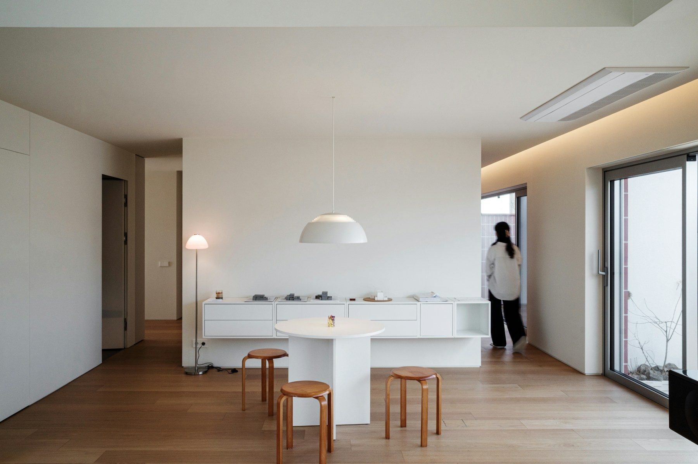

座ったときの、景色。
窓は大きさだけでなく、高さも大切。ソファに腰かけた目線から、庭と空の見え方を考えます。

OUR APPROACH
朝、どこでコーヒーを飲むのか。
休日、誰と食卓を囲むのか。
好きな景色も、いまの住まいの不便も。
言葉にしてみるところから、設計は始まります。
私たちは、使う人の毎日から場所を考えます。
写真は空間表現の参考として使用しています。設計・施工の実績ではありません。
「明るい家」というひと言を、どんな間取りにするか。
窓、家具、歩く道。ひとつずつ、理由のある位置へ。
自主制作の概念図です。写真の建築の実測図・施工図ではありません。
窓は大きさだけでなく、高さも大切。ソファに腰かけた目線から、庭と空の見え方を考えます。
食卓とキッチンを隣り合わせに。料理をする人と待つ人の会話が、自然につながる距離に。
用途を決めすぎない場所を残す。子どもの机、本棚、仕事の席。必要なときに、使い方を変えられるように。
白い面は光を広げ、木の面は手触りを添える。
色数を抑え、使い込む変化を楽しむ素材を。
HOW WE WORK
土地が決まっていなくても、考えがまとまっていなくても。いまの状況から、一緒に整理します。
光の入り方、視線の抜け、家事の動線。日々の使い方を確かめながら、形にしていきます。
素材や納まりを施工者と共有し、現場で確認。完成後の使い心地にも、目を向けます。
THE STUDIO
完成した瞬間が、終わりではない。
家具が増え、季節が巡り、人が集まる。
その変化を受け止める場所を、つくりたい。
START A CONVERSATION
相談の内容を選ぶと、初回に伺う項目が表示されます。
デモのため、情報の送信や相談の申込みは行いません。